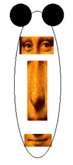
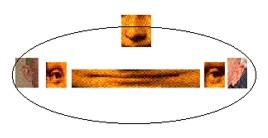
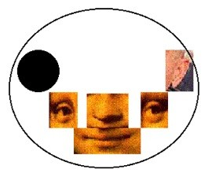
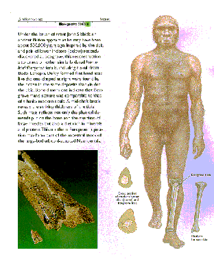

| Feature Article - December 1999 |
| by Do-While Jones |
 |
What has art got to do with evolution? Quite a lot, actually. Natural history museums are full of murals showing what missing links looked like. Although purely imaginary, they are used to bolster "scientific" arguments about what the missing links must have looked like.
It is usually informative to look at a subject from another point of view. So, we wondered what evolution would look like from an abstract artist's point of view. Not everyone understands abstract art. Good abstract art distorts reality in such a way as to make reality more understandable. That is, abstract art is the like the abstract of a technical paper, in which the author abstracts the most important points and collects them in one or two paragraphs. The abstract leaves out the technical details that distract from the fundamental issues. This highlights the important points by removing the clutter. In the same way, an abstract artist paints a picture that contains just the important features, and leaves out unimportant detail that would clutter up the painting and distract from the main point. For example, to the left we have shown how an abstract artist might draw the face of a wolf. A wolf has two large ears on top of its head. (The famous ears we chose for this drawing required no distortion to make the point.) A wolf has two closely-set eyes and a long nose, so we took some famous eyes and squished them together, and stretched her nose. This gives the wolf a very narrow face, with all the facial features stacked neatly on top of each other. |
|
That same abstract artist would probably draw a whale's face this way:
This abstract representation makes the differences between a wolf and a whale strikingly apparent. A whale doesn't have ears on the top of its head-it has a nose on the top of its head! The ears, eyes, and mouth are roughly on the same horizontal line, so they are drawn as being on the same line. Unlike the wolf's eyes, which are very close together, the whale has eyes so widely separated that one rarely sees both of them at the same time. Furthermore, we used totally different (but equally famous) ears to emphasize the fact that whales have totally different ears from wolves. Whales can use their ears for echo-location-wolves can't. |
 |
 |
Evolutionists claim that some wolf-like critter evolved into a whale. So, there must have been a transitional form that had a face with a nose between its eyes, and some transitional ears, as shown in the abstract drawing to the left.
There aren't any fossils with a face like this. Rodhocetus, Ambulocetus, and even Basilosaurus have noses near the end of a snout below their eyes. None of these so-called "transitional whale fossils" show how the nose moved between the eyes on its way up to the top of the head. |
You probably didn't notice that in the evolutionists' artistic conceptions of these "transitional forms." That's probably because you were distracted by the way the body changes smoothly from a wolf-like body to a whale-like body in the "realistic" artist conceptions.
Have you ever seen the bones which were the basis for those body changes? Neither have we. Nor have the artists who drew the bodies, because, as far as we know, no post-cranial bones of Pakicetus, Ambulocetus, Rodhocetus, Indocetus, or Protocetus have ever been found. All they had to work with were skulls, or partial skulls in some cases. The shape of the body was determined from the shape of the teeth.
What the paleontologist's shovel fails to uncover, the artist's brush supplies. The missing links are just figments of imagination with pigment on them.
 |
No doubt you have seen the painting of Nebraska man that was based on a single tooth. It was very convincing (to some), until the rest of his teeth were found attached to a pig's jaw. The drawing at the left appeared in National Geographic. It is based on two teeth and part of a leg bone found in Boxgrove, England, a lower jaw found near Heidelberg, Germany and a skull from Bodo, Ethiopia. Certainly these fragments didn't come from the same individual. Yet evolutionists claim they all came from a species they call Homo heidelbergensis. |
Our abstract drawings of the wolf and the whale admittedly distort reality. Wolves and whales don't look exactly like that. But our drawings do accurately represent the location of key elements of their faces, and show what would have to change for one face to evolve into the other.
The evolutionists' paintings of transitional form are less honest than our abstract drawings because the realistic style makes it impossible to tell which parts of the paintings are based on fact and which parts are based on evolutionary faith.
We love art. But we recognize that art isn't science. Art is a way of expressing an idea that may or may not be scientific. Artists' conceptions are not scientific evidence. They are simply the representation of an image. Don't put too much faith in them.
| Quick links to | |||
|---|---|---|---|
| Science Against Evolution Home Page |
Back issues of Disclosure (our newsletter) |
Web Site of the Month |
Topical Index |
Footnotes:
1
Taylor, The Illustrated Origins Answer Book, page 67
(CR)
2
Defense Mapping Agency Technical Report DMA TR 8350.2, September 30, 1987, page 6-1.
3
Ibid. Table 6.1